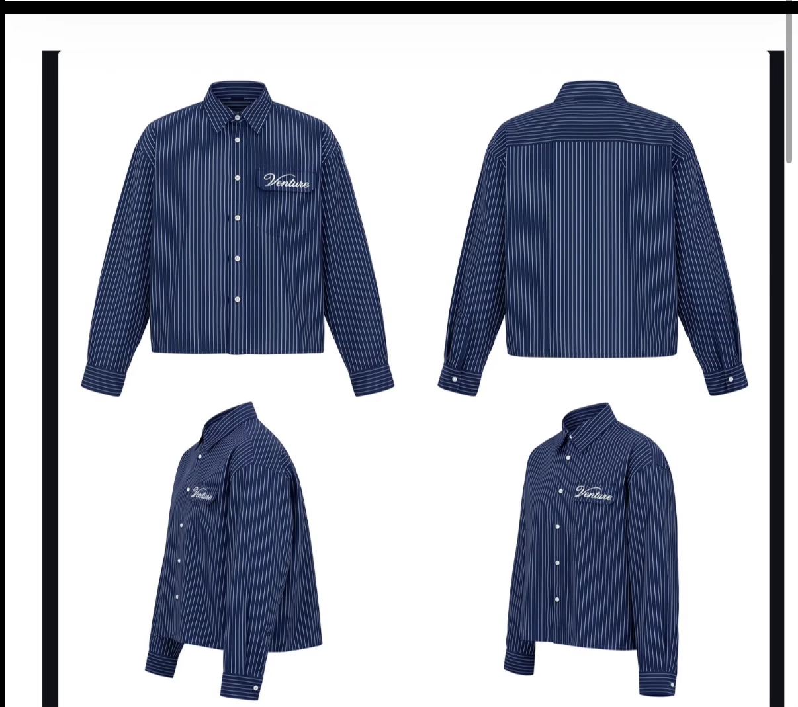

Venture navy pinstripe shirt · UK audience · researched 11 September 2026

Aim for Sunday 4 October 2026, at 7pm UK time.
My preferred selling window is late September through early October. If the sample passes and stock is ready earlier, Sunday 27 September is also a sensible launch. Do not accelerate production at the expense of fit or finishing just to hit the earlier date. The specific Sunday and hour are an operating choice to test, not a proven universal best time.
Your samples are expected Tuesday 15 September. Your approximate three-week readiness date is 2 October, so 4 October gives you a practical target inside the seasonal window. I would choose broadly the same window even if production could be faster.
Why this shirt fits that window
The mockup reads as a navy, fine-pinstripe, long-sleeve shirt with a short, broad body and a white script chest logo. That puts it between a conventional button-down and relaxed contemporary menswear. It has stronger autumn city, dinner and weekend relevance than beach-only relevance. The actual sample still needs to prove the silhouette and drape.
Cooler UK autumn conditions support wearing it buttoned or over a tee, with a jacket as temperatures fall. This is a styling inference informed by the Met Office’s autumn climate overview, not a demand forecast. Fabric weight and composition are unknown, so I am not claiming warmth, breathability or premium feel from a picture.
Market it first with off-white or faded blue denim, then with charcoal trousers for evening wear. Shoot one fully buttoned look, one open over a white tee, and a side/back view. Keep the hem visible: the silhouette is likely to do more selling than a close-up of the logo alone.
| Window | My assessment |
|---|---|
| 27 Sep–11 Oct 2026 | Preferred. Enough autumn relevance without waiting for a heavy-layering season. Build the campaign around real UK use. |
| Late Oct–Nov | Still viable, especially as an evening shirt, but it will need stronger layering and occasion styling. I would not delay solely to join a sale period. |
| March–April 2027 | Good second campaign or restock window. A navy long sleeve can return as a light layer; there is no need to hold finished stock until then. |
Vaucluse’s strongest months: what we can substantiate
Particl estimates March as the strongest of the six displayed months, followed by June and April. The visible chart covers January–June 2026 for vauclusestudios.com. These are third-party estimates, not audited sales, profit, ad ROAS or UK-only results. The page displays “$”; its currency basis was not established. Source: live Particl chart tooltips.
| Month | Estimate | Displayed lower–upper |
|---|---|---|
| January | $39K | $34K–$43K |
| February | $49K | $44K–$54K |
| March | $130K | $115K–$146K |
| April | $84K | $75K–$93K |
| May | $79K | $70K–$89K |
| June | $101K | $90K–$112K |
The six central estimates total $482K, matching the page’s six-month headline. Its accessible chart is labelled a revenue forecast with bounds. Other page elements include blurred placeholders, so those were excluded. The chart gives a useful lead, but not a full-year ranking. Download the six observed values.
There are useful campaign clues around March: Vaucluse’s 1 March production-complete Reel announces a polo restock and SMS early access. Its 27 March Reel teases three new polo colours. That sequence is consistent with building demand around availability, but it cannot isolate the cause of estimated revenue.
The strongest observed long-sleeve launch reference is older: 28 May 2024, about 160K lifetime views, promoting a 6 June release. Another striped work-shirt introduction shows about 98.8K. Those demonstrate successful reach for shirting outside autumn. They do not establish monthly sales or the share of views bought through ads.
Vaucluse also operates across hemispheres. A March or June result for its .com store should not become a UK launch rule. Similarweb’s August estimate showed .com traffic up 78.95% month on month, while its UK .co estimate fell 62.62%. These estimates illustrate why domains and sales must be kept separate; they do not rank brand-wide revenue.
What to adapt from their marketing
Download the full marketing audit and ad register.
Vaucluse repeats the same product through several inexpensive formats: on-body movement, rail/hanger footage, hand-led details, founder explanations, production clips and lifestyle scenes. The repeatable lesson is to make the product recognisable across many executions and to make the release date clear.
The sampled Meta library contained active video, still-image and catalogue variants. Examples include an eight-second polo-on-rail ad and a three-second product cutout ad. Simple production is part of the mix. Active ad counts and longevity do not reveal spend or profitability.
Its public storefront loads Klaviyo, and the March Reel explicitly promotes SMS early access. The useful structure for Venture is a waitlist, a real product reveal, a clear release date and a launch reminder. I did not obtain Vaucluse’s inbox sequence, email revenue or open/click rates. Panoramata, MailCharts and Milled can help inspect captured emails if the brand is covered; coverage needs checking before paying. MailCharts explicitly excludes competitors’ performance/open-rate data.
The six Venture videos I would make first
- First look, 6–10 seconds. Start wearing it. Turn front, side and back. Test “A navy shirt with the proportions we wanted” against an opening with no text.
- Hands and details, 8–12 seconds. Lift it from the rail, show collar, stripe alignment, pocket embroidery and buttons, then cut to the outfit. Closest reference: V24 and V54.
- One shirt, three settings, 10–15 seconds. Café/daytime, street movement, dinner/evening. Keep the navy shirt constant and change the styling.
- Sample decision, 15–25 seconds. Explain one real change in body length, sleeve width or fabric. Film the evidence rather than claiming “best quality”. Closest references: V06 and V27.
- Creator try-on, 15–20 seconds. Show their size, height, honest fit impression and natural styling. Arrange genuine use and feedback before trying to reproduce celebrity seeding.
- One broader concept test. Borrow a reveal, prop or escalation mechanic from the Outside vibe category. Keep the shirt recognisable. Compare it with the clear product videos on product-page visits and purchases, not likes alone.
A practical launch run-up
| Date | Action |
|---|---|
| 15–18 September | Inspect the sample on bodies: front/back length, sleeve shape, stripe alignment, embroidery, buttons and movement. Verify composition and care instructions. Approve production only when the actual garment is right. |
| 19–23 September | Film the six concepts. Put a clear waitlist page live with actual photos, estimated price only if settled, and honest availability. Capture real sizing questions. |
| 24–29 September | Publish the strongest reveals and a founder explanation. Confirm the stock arrival and dispatch promise. Get a few relevant creators wearing samples if feasible. |
| 30 September–3 October | Announce the locked date, show fit/size information, and send a launch reminder to consenting subscribers. Show actual stock when it arrives. |
| 4 October, 7pm UK | Open the drop. Give the waitlist the promised access, check the purchase flow and monitor sizing questions. Only use scarcity claims that match real inventory. |
| 5–11 October | Answer objections with fit and detail clips. Judge creative by qualified visits, add-to-carts and purchases. Recut strong openings instead of assuming the most-liked video is the best ad. |
Price, fabric, landed cost, stock quantity and your audience’s purchase history are still unknown. Those should set the margin and paid-testing budget. For planning, calculate allowable acquisition cost from selling price minus product, fulfilment, fees, shipping subsidy and an allowance for returns; do not copy a competitor’s apparent scale.
Coverage and QC
This round contains every Reel link loaded to the bottom of Vaucluse’s accessible Instagram Reels tab: 83. It also includes 17 selected feed references, deliberately spanning clothing brands, fashion creators and broader hooks. It does not claim to include deleted posts, private content, all ads, every TikTok or all clothing brands. The supplied hair-transplant Reel is retained as a backup URL because its public download is audience-restricted.
All 99 saved videos have local source files and source URLs. Browser copies retain dimensions and aspect ratio; compatible video encoding supports phone playback. Full-resolution still images open directly. See the QC register for file checks and source register for each item.